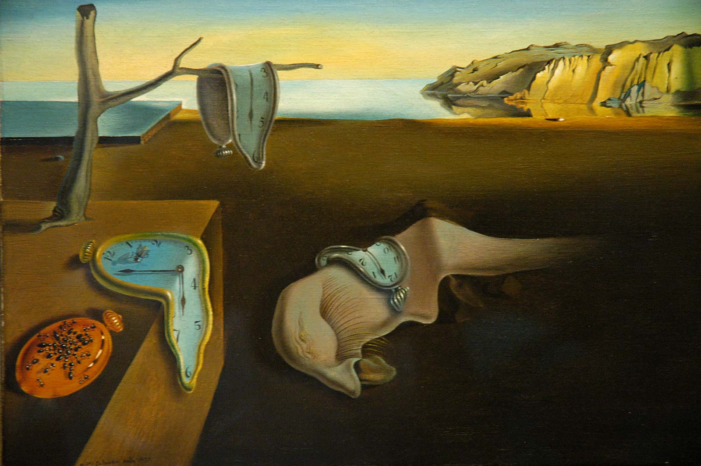

General Definition
Art is a diverse range of human activities in creating visual, auditory or performing artifacts (artworks), expressing the author's imaginative, conceptual ideas, or technical skill, intended to be appreciated for their beauty or emotional power.Though there is no generally agreed definition of what constitutes art, and has changed over time, general descriptions mention an idea of imaginative or technical skill stemming from human agency and creation. The nature of art and related concepts, such as creativity and interpretation, are explored in a branch of philosophy known as aesthetics.
Origin and History of Art
The foundation of art history can be traced back tens of thousands of years to when ancient civilizations used available techniques and media to depict culturally significant subject matter. Since these early examples, a plethora of art movements have followed, each bearing their own distinct styles and characteristics that reflect the political and social influences of the period from which they emerged
Medieval Art
The Middle Ages, often referred to as the “Dark Ages,” marked a period of economic and cultural deterioration following the fall of the Roman Empire in 476 A.D. Much of the artwork produced in the early years of the period reflects that darkness, characterized by grotesque imagery and brutal scenery. Art produced during this time was centered around the Church. As the first millennium passed, more sophisticated and elaborately decorated churches emerged; windows and silhouettes were adorned with biblical subjects and scenes from classical mythology.
Renaissance Art
This style of painting, sculpture, and decorative art was characterized by a focus on nature and individualism, the thought of man as independent and self-reliant. Though these ideals were present in the late Medieval period, they flourished in the 15th and 16th centuries, paralleling social and economic changes like secularization.
Baroque

The Baroque period that followed Mannerism yielded ornate, over-the-top visual arts and architecture. It was characterized by grandeur and richness, punctuated by an interest in broadening human intellect and global discovery. Baroque artists were stylistically complex.
Neoclassicism

As its name suggests, the Neoclassical period drew upon elements from classical antiquity. Archaeological ruins of ancient civilizations in Athens and Naples that were discovered at the time reignited a passion for all things past, and artists strove to recreate the great works of ancient art. This translated to a renewed interest in classical ideals of harmony, simplicity, and proportion.
Romanticism

Romanticism embodies a broad range of disciplines, from painting to music to literature. The ideals present in each of these art forms reject order, harmony, and rationality, which were embraced in both classical art and Neoclassicism. Instead, Romantic artists emphasized the individual and imagination. Another defining Romantic ideal was an appreciation for nature, with many turning to plein air painting, which brought artists out of dark interiors and enabled them to paint outside. Artists also focused on passion, emotion, and sensation over intellect and reason.
Realism
Arguably the first modern art movement, Realism, began in France in the 1840s. Realism was a result of multiple events: the anti-Romantic movement in Germany, the rise of journalism, and the advent of photography. Each inspired new interest in accurately capturing everyday life. This attention to accuracy is evident in art produced during the movement, which featured detailed, life-like depictions of subject matter.
Impressionism
Impressionist painters sought to capture the immediate impression of a particular moment. This was characterized by short, quick brushstrokes and an unfinished, sketch-like feel. Impressionist artists used modern life as their subject matter, painting situations like dance halls and sailboat regattas rather than historical and mythological events.
Expressionism
Expressionism emerged as a response to increasingly conflicted world views and the loss of spirituality. Expressionist art sought to draw from within the artist, using a distortion of form and strong colors to display anxieties and raw emotions. Expressionist painters, in a quest for authenticity, looked for inspiration beyond that of Western art and frequented ethnographic museums to revisit native folk traditions and tribal art.
Surrealism
Surrealism emerged from the Dada art movement in 1916, showcasing works of art that defied reason. Surrealists denounced the rationalist mindset. They blamed this thought process on events like World War I and believed it to repress imaginative thoughts. Surrealists were influenced by Karl Marx and theories developed by Sigmund Freud, who explored psychoanalysis and the power of imagination.
Contemporary Art
The 1970s marked the beginning of contemporary art, which extends through present day. This period is dominated by various schools and smaller movements that emerged.